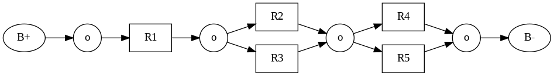
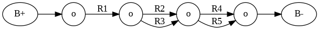
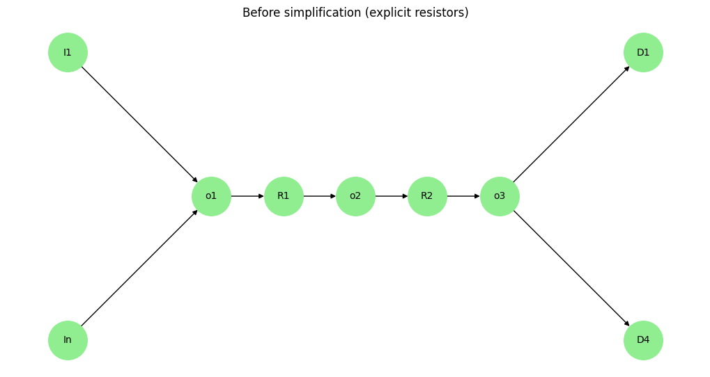
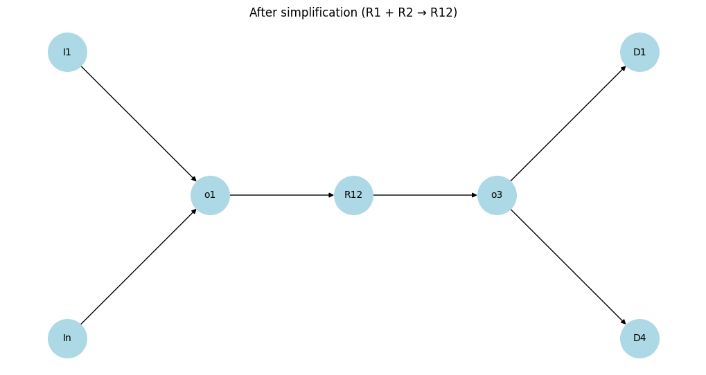
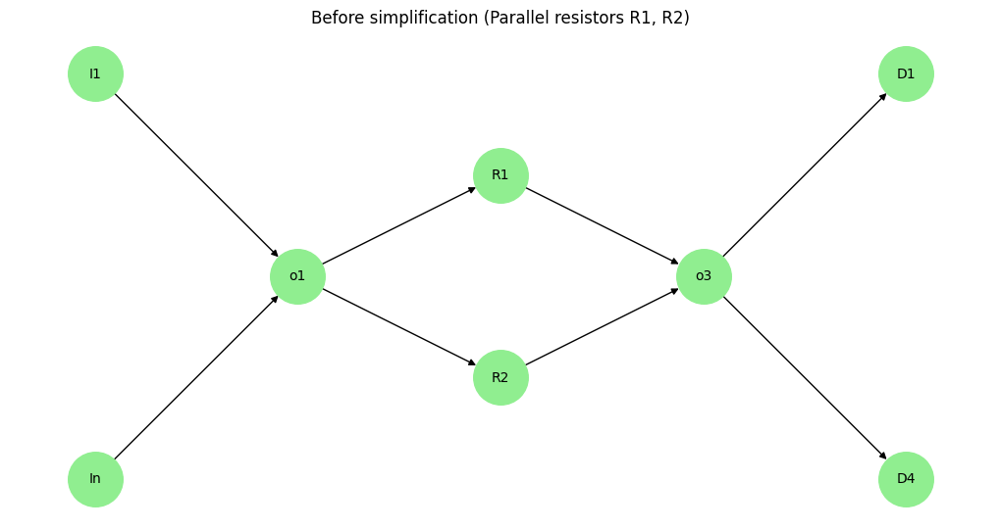
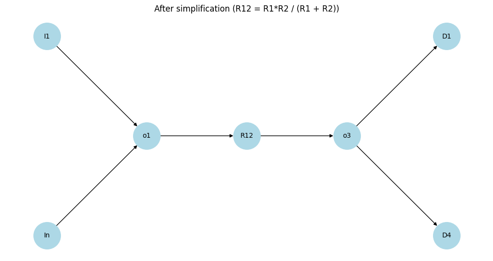

Problem 1
Equivalent Resistance via Graph Theory
1. Problem Overview
Analyzing electrical circuits using graph theory transforms a physical system into a mathematical model. In this approach, nodes represent circuit junctions, and edges represent resistors with associated weights (resistance values).
The central objective is to calculate the equivalent resistance \(R_{\text{eq}}\) between two designated terminals by systematically simplifying the graph.
2. Graph-Theoretic Representation of Circuits
A resistive electrical network can be modeled as an undirected, weighted graph \(G = (V, E)\) where:
- \(V\) is the set of vertices (nodes/junctions).
- \(E\) is the set of edges (resistors).
- Each edge \(e_{ij} \in E\) connects nodes \(i\) and \(j\) with weight \(w_{ij} = R_{ij}\), the resistance.
Types of connections:
- Series: Resistors along a unique path.
- Parallel: Resistors sharing the same pair of nodes.
3. Series and Parallel Simplification
Series Resistance
If resistors \(R_1, R_2, \dots, R_n\) are connected in series, the equivalent resistance is the sum:
Graph-theoretically: a path of degree-2 nodes (excluding endpoints) can be collapsed into a single edge.
Parallel Resistance
If resistors \(R_1, R_2, \dots, R_n\) are connected in parallel between two nodes:
Graph-theoretically: multiple edges between the same node pair can be merged.
4. Nested and Complex Structures
Real-world networks include nested series-parallel combinations and bridge circuits (e.g., Wheatstone bridge) that cannot be reduced by series-parallel rules alone.
Such networks may require:
- Recursive decomposition.
- Cycle detection for recognizing parallel structures.
- Graph contraction to reduce substructures iteratively.
5. Algorithmic Strategy
- Parse input circuit into a graph: edge list or adjacency list with weights.
- Identify reducible patterns:
- Degree-2 chains (series)
- Multiple edges or cycles (parallel)
- Apply simplification rules recursively or iteratively.
- Repeat until the graph reduces to a single edge representing \(R_{\text{eq}}\).
6. Mathematical Tools
- Graph contraction: Merges nodes and aggregates edge weights.
- DFS/BFS: Used to identify paths, cycles, and connected components.
- Cycle detection: Essential for detecting non-trivial parallel paths.
7. Special Cases
Single Resistor
Trivial case:
Empty Graph
No connection implies:
Disconnected Graph
If nodes are isolated, the resistance is undefined or infinite.
8. Theoretical Limitations
Series-parallel reduction fails for non-planar graphs or those with non-reducible cycles, requiring:
- Kirchhoff's laws or
- Laplacian matrix and linear algebraic methods (e.g., solving using node-voltage method).
Plots
Circuit simplification. Case 1

Initial vs Simplified Resistance
We analyze the resistor network with all resistors having a value of $ 1\,\Omega $.
Initial Resistance (Before Simplification)
Even before any reduction, the total resistance between $ B+ $ and $ B- $ is calculated as:
This comes from: - $ R_{23} = R_2 + R_3 = 1 + 1 = 2\,\Omega $ - $ R_{45} = R_4 + R_5 = 1 + 1 = 2\,\Omega $ - $ R_{123} = R_1 \parallel R_{23} = \frac{1 \cdot 2}{1 + 2} = \frac{2}{3}\,\Omega $ - $ R_{\text{total}} = R_{123} + R_{45} = \frac{2}{3} + 2 = \frac{8}{3}\,\Omega $
After Step-by-step Simplification
Each step maintains the same total resistance: - Combine $ R2 $ & $ R3 $ → $ 2\,\Omega $ - Combine $ R4 $ & $ R5 $ → $ 2\,\Omega $ - Combine $ R1 $ & $ R23 $ in parallel → $ \frac{2}{3}\,\Omega $ - Final series combination → $ \frac{8}{3}\,\Omega $
Final Result Matches Initial Value
import networkx as nx
import matplotlib.pyplot as plt
from PIL import Image
import os
from google.colab import files
# Create a directory to store frames
if not os.path.exists("frames"):
os.makedirs("frames")
# Initialize the graph for the circuit
G = nx.Graph()
G.add_nodes_from(["B+", "B-", "R1", "R2", "R3", "R4", "R5"])
G.add_edges_from([("B+", "R2"), ("R2", "R3"), ("R3", "R4"), ("R4", "R5"), ("R5", "B-"), ("B+", "R1"), ("R1", "R4")])
# Define node positions for a more balanced layout
pos = {
"B+": (0, 0),
"R2": (1.5, 1),
"R3": (2.5, 1),
"R4": (3.5, 0),
"R5": (4.5, 0),
"B-": (6, 0),
"R1": (2, -1)
}
# Function to draw the graph for each frame with improved styling
def draw_graph(G, pos, frame_num, highlighted_nodes=None, combined_label=None):
plt.figure(figsize=(8, 5), facecolor='white')
ax = plt.gca()
ax.set_facecolor('white')
# Define node colors and labels
node_colors = []
labels = {}
for node in G.nodes():
if highlighted_nodes and node in highlighted_nodes:
node_colors.append("red" if frame_num == 1 else "green" if frame_num == 2 else "cyan" if frame_num == 3 else "purple")
else:
node_colors.append("lightgray")
labels[node] = node if node not in ["B+", "B-"] else f"{node[:-1]}{node[-1]}"
if combined_label and node in highlighted_nodes:
labels[node] = combined_label
# Draw the graph with enhanced styling
nx.draw_networkx_nodes(G, pos, node_color=node_colors, node_size=1200, node_shape='s', edgecolors='black', linewidths=1.5)
nx.draw_networkx_edges(G, pos, width=2, edge_color='gray', arrows=True, arrowsize=15)
nx.draw_networkx_labels(G, pos, labels=labels, font_size=12, font_weight="bold", font_family="sans-serif")
# Add a styled title
plt.title(f"Step {frame_num + 1}", fontsize=16, fontweight='bold', pad=20, loc='left')
plt.axis('off') # Hide axes for a cleaner look
plt.savefig(f"frames/frame_{frame_num}.png", bbox_inches="tight", dpi=100)
plt.close()
# List to store frames
frames = []
# Frame 0: Initial circuit
draw_graph(G, pos, 0)
frames.append(Image.open(f"frames/frame_0.png"))
# Frame 1: Combine R2 and R3 into R23
G_combined1 = G.copy()
G_combined1 = nx.contracted_nodes(G_combined1, "R2", "R3", self_loops=False)
G_combined1 = nx.relabel_nodes(G_combined1, {"R2": "R23"})
pos["R23"] = ((pos["R2"][0] + pos["R3"][0]) / 2, (pos["R2"][1] + pos["R3"][1]) / 2)
draw_graph(G_combined1, pos, 1, highlighted_nodes=["R23"], combined_label="R23")
frames.append(Image.open(f"frames/frame_1.png"))
# Frame 2: Combine R4 and R5 into R45
G_combined2 = G_combined1.copy()
G_combined2 = nx.contracted_nodes(G_combined2, "R4", "R5", self_loops=False)
G_combined2 = nx.relabel_nodes(G_combined2, {"R4": "R45"})
pos["R45"] = ((pos["R4"][0] + pos["R5"][0]) / 2, (pos["R4"][1] + pos["R5"][1]) / 2)
draw_graph(G_combined2, pos, 2, highlighted_nodes=["R45"], combined_label="R45")
frames.append(Image.open(f"frames/frame_2.png"))
# Frame 3: Combine R1 and R23 into R123
G_combined3 = G_combined2.copy()
G_combined3 = nx.contracted_nodes(G_combined3, "R1", "R23", self_loops=False)
G_combined3 = nx.relabel_nodes(G_combined3, {"R1": "R123"})
pos["R123"] = ((pos["R1"][0] + pos["R23"][0]) / 2, (pos["R1"][1] + pos["R23"][1]) / 2)
draw_graph(G_combined3, pos, 3, highlighted_nodes=["R123"], combined_label="R123")
frames.append(Image.open(f"frames/frame_3.png"))
# Frame 4: Combine R123 and R45 into R12345
G_combined4 = G_combined3.copy()
G_combined4 = nx.contracted_nodes(G_combined4, "R123", "R45", self_loops=False)
G_combined4 = nx.relabel_nodes(G_combined4, {"R123": "R12345"})
pos["R12345"] = ((pos["R123"][0] + pos["R45"][0]) / 2, (pos["R123"][1] + pos["R45"][1]) / 2)
draw_graph(G_combined4, pos, 4, highlighted_nodes=["R12345"], combined_label="R12345")
frames.append(Image.open(f"frames/frame_4.png"))
# Save frames as a GIF
frames[0].save("circuit_simplification_case1.gif", save_all=True, append_images=frames[1:], duration=1000, loop=0)
# Download the GIF
files.download("circuit_simplification_case1.gif")
# Clean up frames directory
import shutil
shutil.rmtree("frames")
Case 2
Step 1

Step 2

Step 3

from graphviz import Digraph
# 1. Початкова схема
dot1 = Digraph(comment='Initial')
dot1.attr(rankdir='LR')
dot1.node('B+', 'B+')
dot1.node('R1', 'R1', shape='box')
dot1.node('R2', 'R2', shape='box')
dot1.node('R3', 'R3', shape='box')
dot1.node('R4', 'R4', shape='box')
dot1.node('R5', 'R5', shape='box')
dot1.node('O1', 'o', shape='circle')
dot1.node('O2', 'o', shape='circle')
dot1.node('B-', 'B-')
dot1.edges([('B+', 'R1'), ('R1', 'R2'), ('R1', 'R3'),
('R2', 'O1'), ('R3', 'O1'), ('O1', 'R4'), ('O1', 'R5'),
('R4', 'B-'), ('R5', 'B-')])
# 2. Удосконалена схема (з додатковими вузлами o)
dot2 = Digraph(comment='More consistent')
dot2.attr(rankdir='LR')
dot2.node('B+', 'B+')
dot2.node('O0', 'o', shape='circle')
dot2.node('R1', 'R1', shape='box')
dot2.node('O1', 'o', shape='circle')
dot2.node('R2', 'R2', shape='box')
dot2.node('R3', 'R3', shape='box')
dot2.node('O2', 'o', shape='circle')
dot2.node('R4', 'R4', shape='box')
dot2.node('R5', 'R5', shape='box')
dot2.node('O3', 'o', shape='circle')
dot2.node('B-', 'B-')
dot2.edges([('B+', 'O0'), ('O0', 'R1'), ('R1', 'O1'),
('O1', 'R2'), ('O1', 'R3'),
('R2', 'O2'), ('R3', 'O2'),
('O2', 'R4'), ('O2', 'R5'),
('R4', 'O3'), ('R5', 'O3'), ('O3', 'B-')])
# 3. Спрощена графова схема (резистори — це ребра)
dot3 = Digraph(comment='Resistors as edges')
dot3.attr(rankdir='LR')
dot3.node('B+', 'B+')
dot3.node('O0', 'o', shape='circle')
dot3.node('O1', 'o', shape='circle')
dot3.node('O2', 'o', shape='circle')
dot3.node('O3', 'o', shape='circle') # Додано останній вузол "o"
dot3.node('B-', 'B-')
dot3.edge('B+', 'O0')
dot3.edge('O0', 'O1', label='R1')
dot3.edge('O1', 'O2', label='R2')
dot3.edge('O1', 'O2', label='R3')
dot3.edge('O2', 'O3', label='R4')
dot3.edge('O2', 'O3', label='R5')
dot3.edge('O3', 'B-',)
# Вивід схем
dot1.render('initial_scheme', format='png', cleanup=False)
dot2.render('consistent_scheme', format='png', cleanup=False)
dot3.render('simplified_scheme', format='png', cleanup=False)
Building blocks
Series confugiration

Can be replaced by

import networkx as nx
import matplotlib.pyplot as plt
# === ГРАФ до спрощення ===
G = nx.DiGraph() # напрямлений для точності
# Вузли: вхідні, вихідні, опори, з'єднувальні
G.add_nodes_from(['I1', 'In', 'o1', 'o2', 'o3', 'R1', 'R2', 'D1', 'D4'])
# З'єднання
G.add_edge('I1', 'o1')
G.add_edge('In', 'o1')
G.add_edge('o1', 'R1')
G.add_edge('R1', 'o2')
G.add_edge('o2', 'R2')
G.add_edge('R2', 'o3')
G.add_edge('o3', 'D1')
G.add_edge('o3', 'D4')
# Позиції для кращої візуалізації
pos = {
'I1': (-2, 1), 'In': (-2, -1),
'o1': (-1, 0), 'R1': (-0.5, 0), 'o2': (0, 0),
'R2': (0.5, 0), 'o3': (1, 0),
'D1': (2, 1), 'D4': (2, -1)
}
# Малюємо початкову схему
plt.figure(figsize=(10, 5))
nx.draw(G, pos, with_labels=True, node_color='lightgreen', node_size=1600, font_size=10)
plt.title("Before simplification (explicit resistors)")
plt.show()
# === СПРОЩЕННЯ: заміна R1, R2 та o2 на один резистор R12 ===
# Створюємо новий граф
G2 = nx.DiGraph()
G2.add_nodes_from(['I1', 'In', 'o1', 'R12', 'o3', 'D1', 'D4'])
G2.add_edge('I1', 'o1')
G2.add_edge('In', 'o1')
G2.add_edge('o1', 'R12')
G2.add_edge('R12', 'o3')
G2.add_edge('o3', 'D1')
G2.add_edge('o3', 'D4')
# Оновлені позиції
pos2 = {
'I1': (-2, 1), 'In': (-2, -1),
'o1': (-1, 0), 'R12': (0, 0), 'o3': (1, 0),
'D1': (2, 1), 'D4': (2, -1)
}
# Малюємо спрощену схему
plt.figure(figsize=(10, 5))
nx.draw(G2, pos2, with_labels=True, node_color='lightblue', node_size=1600, font_size=10)
plt.title("After simplification (R1 + R2 → R12)")
plt.show()
Parallel configuration

Can be replaced by

import networkx as nx
import matplotlib.pyplot as plt
# === ГРАФ ДО СПРОЩЕННЯ ===
G = nx.DiGraph()
# Вузли
G.add_nodes_from(['I1', 'In', 'o1', 'R1', 'R2', 'o3', 'D1', 'D4'])
# Зв'язки
G.add_edge('I1', 'o1')
G.add_edge('In', 'o1')
G.add_edge('o1', 'R1')
G.add_edge('R1', 'o3')
G.add_edge('o1', 'R2')
G.add_edge('R2', 'o3')
G.add_edge('o3', 'D1')
G.add_edge('o3', 'D4')
# Позиції
pos = {
'I1': (-2, 1), 'In': (-2, -1),
'o1': (-1, 0),
'R1': (0, 0.5), 'R2': (0, -0.5),
'o3': (1, 0),
'D1': (2, 1), 'D4': (2, -1)
}
# Малюнок до спрощення
plt.figure(figsize=(10, 5))
nx.draw(G, pos, with_labels=True, node_color='lightgreen', node_size=1600, font_size=10)
plt.title("Before simplification (Parallel resistors R1, R2)")
plt.show()
# === СПРОЩЕНА СХЕМА ===
G2 = nx.DiGraph()
G2.add_nodes_from(['I1', 'In', 'o1', 'R12', 'o3', 'D1', 'D4'])
G2.add_edge('I1', 'o1')
G2.add_edge('In', 'o1')
G2.add_edge('o1', 'R12')
G2.add_edge('R12', 'o3')
G2.add_edge('o3', 'D1')
G2.add_edge('o3', 'D4')
# Позиції
pos2 = {
'I1': (-2, 1), 'In': (-2, -1),
'o1': (-1, 0),
'R12': (0, 0), 'o3': (1, 0),
'D1': (2, 1), 'D4': (2, -1)
}
# Малюнок після спрощення
plt.figure(figsize=(10, 5))
nx.draw(G2, pos2, with_labels=True, node_color='lightblue', node_size=1600, font_size=10)
plt.title("After simplification (R12 = R1*R2 / (R1 + R2))")
plt.show()